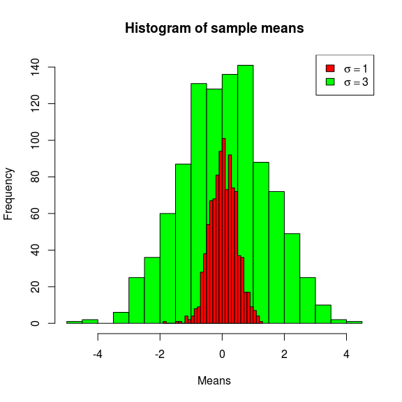

2 单样本T检验
2.1 前提条件
使用T检验，前提条件必须是满足正态分布，如果样本量足够多的时候，根据中心极限定理，数据分布不呈正态也是没问题的。
2.2 数据标准化
在满足前提条件的基础上，我们假定均值的分布是呈正态的。
简单点说，我们的任务是看样本均值偏离总体均值有多远，越远则p值越小，这是绝对正相关的。那么直接计算 \(| \bar{x} - \mu |\) 行不行？显然可以，但是it depends。
get_sample_mean <- function(size, population, n=1000) {
sapply(1:n, function(i) {
x <- sample(population, size)
mean(x)
})
}
m1 <- get_sample_mean(5, rnorm(1000))
m2 <- get_sample_mean(5, rnorm(1000, sd=3))
hist(m2, col="green", main="Histogram of sample means", xlab="Means", breaks=30)
hist(m1, col="red", add=T, breaks=30)
legend(legend=c(expression(paste(sigma==1)), expression(paste(sigma==3))), fill=c("red", "green"), "topright")
我们知道正态分布由两个参数决定，均值和方差，所以 \(| \bar{x} - \mu |\) 的大小，不能直接对应到p值，从上图绿色中抽到一个\(| \bar{x} - \mu | = 3\) 的样本，概率并不低，但从红色分布中得到这样一个样本，几乎是不可能的。
拿 \(| \bar{x} - \mu |\) 来度量的话，你必须提供 \(sd(\bar{x})\) ，\(| \bar{x} - \mu |\) 不能直接比较。
如果\(sd(\bar{x})\) 相同的话，\(| \bar{x} - \mu |\) 就是很好的度量方法，它是可比较的，值越大，p值越小。那么我们需要做的，就是把数据压缩到同一个scale上，既然均值分布呈正态分布，而所有的正态分布都可以scale到标准正态分布上，显然我们可以用相同的方法来处理，把数据统一scale到 \(SEM = 1\) ，于是差值 \(| scale(\bar{x}) - \mu |\) 就完全可以拿来比较，年纪大点的人，上学时候p值是通过查表获得的，查表用的值就是 \(| scale(\bar{x}) - \mu |\) 。
2.3 Z检验
在讲T检验前，先回顾一下Z检验，标准正态分布称之为Z分布，根据Z分布来做统计检验，便是Z检验。 我们把一个正态分布scale到标准正态分布上，通过: \[ \frac{x-\mu}{sd}\]
在这里检验的统计量是均值 \(\bar{x}\) ，均值的sd，也就是SEM， \(SEM=\frac{\sigma}{\sqrt{n}}\) ，通过 \(\frac{sd(x)}{\sqrt{n}}\) 估计，具体参考置信区间一节，
所以我们使用以下公式，把均值分布scale到z分布上： \[z= \frac{\bar{x}-\mu}{sd(x)/\sqrt{n}}\]
那么通过z值在z分布上的位置，就可以算出p值，进行z检验。
2.4 t检验
In theory, there is no difference between theory and practice. But, in practice, there is.
-- Jan L.A. van de Snepscheut 虽然可以直接利用正态分布来计算p值，然而理想状态很丰满，现实却很骨感，如果样本量n较大时，不单t分布逼近正态分布， \(\chi^2_{(n)}\) ,Poisson( \(lambda\) ),和二项分布B(n,p)都逼近正态，然而我们没有那么大的样本量，所以在不理想的现实中，有各种各样的检验来应对各种情景和现实条件。
我们要通过样本参数来估计总体参数，特别是对于小样本来说，非常不靠谱。可以说正态是理想状态，而T分布是其现实版本。T分布中心比正态分布平，尾巴比正态分布长，特别是在自由度较小的情况下，所以T检验计算出来的p值比Z检验要保守些。
相应的，t值的计算和z值的计算是一样的。 \[t=\frac{\bar{x}-\mu}{sd(x)/\sqrt{n}}\]
使用R进行单样本的T检验，是一件非常容易的事情。
x <- sample(1:100, 10)
print(x)## [1] 74 29 23 85 46 79 65 8 6 54t.test(x, mu=20)##
## One Sample t-test
##
## data: x
## t = 2.9134, df = 9, p-value = 0.01722
## alternative hypothesis: true mean is not equal to 20
## 95 percent confidence interval:
## 26.01275 67.78725
## sample estimates:
## mean of x
## 46.92013-03-26